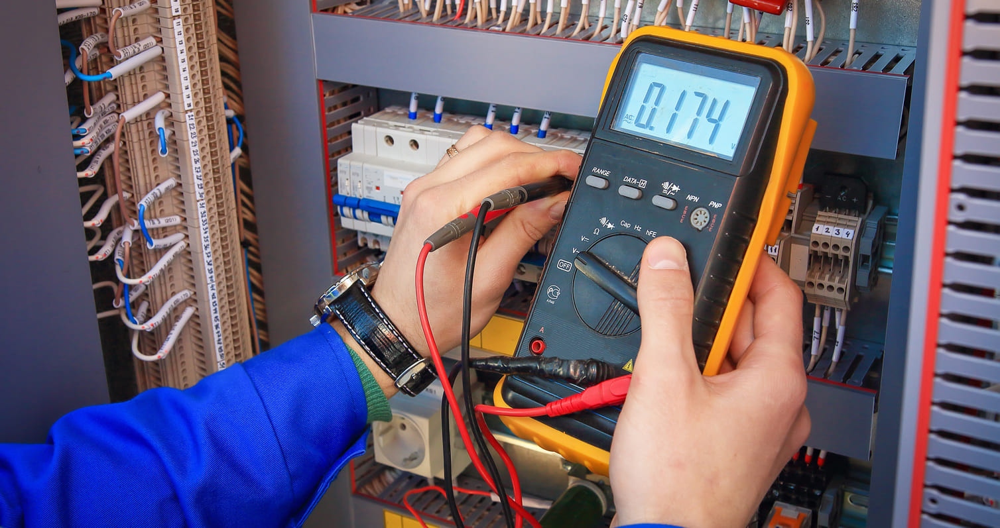

Semana 7: Práctica con multimetro
Realizamos una práctica en eclase enfocada en el manejo y medición de componentes electrónicos utilizando un multímetro digital. A continuación, detallo las actividades realizadas y los resultados obtenidos:
Conexión Correcta del Multímetro
Lo primero que hicimos fue conectar correctamente el multímetro. Configuramos el instrumento para las diferentes mediciones que realizamos durante la práctica, asegurándonos de utilizar los puertos adecuados y seleccionar la escala correcta para cada tipo de medición.

Comparación de Resistencias
Medimos el valor de resistencias diferentes utilizando el multímetro y luego comparamos los resultados obtenidos con los valores calculados mediante la calculadora de código de colores de resistencias.

Medición de Voltaje en Pilas
Utilizamos el multímetro para medir el voltaje de distintas pilas. Registramos el valor de cada una y tomamos fotos de cada medición.